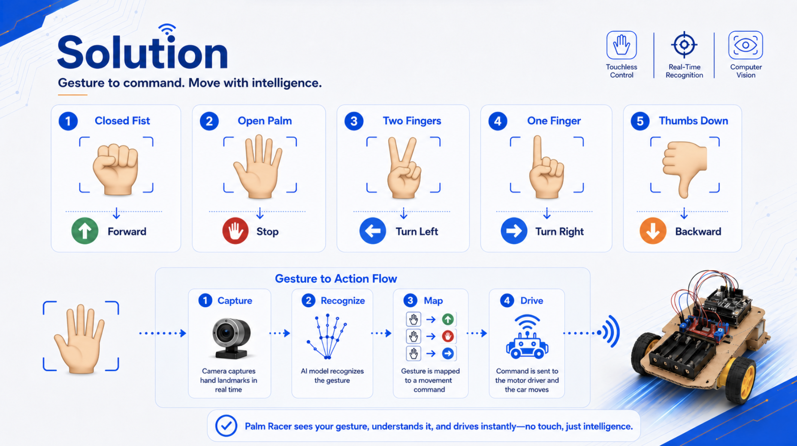
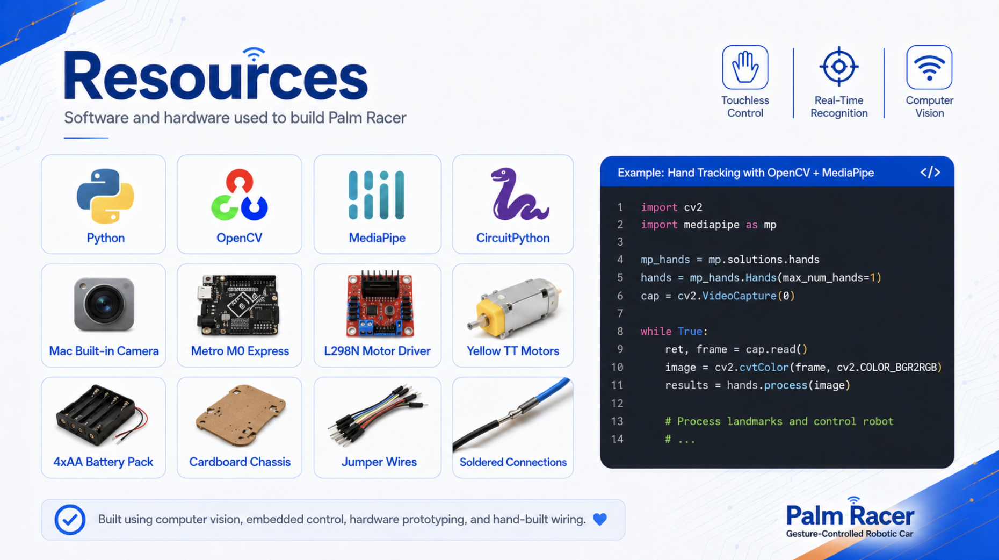
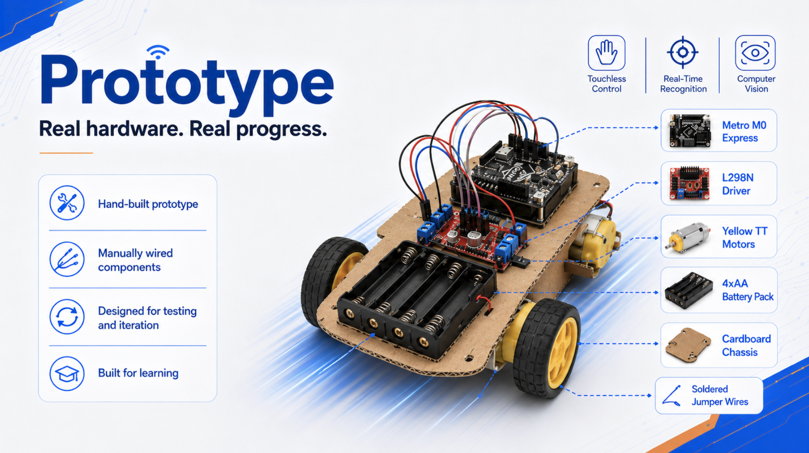

01 — OVERVIEW
Project Overview
Palm Racer is a real-time hand-gesture-controlled robotic vehicle developed during UC San Diego's Summer Internship Preparatory Program (SIPP). The system recognizes hand gestures through a camera and converts them into movement commands for the vehicle.
02 — SYSTEM
How It Works

03 — TECHNOLOGY
Built With
⚙ Hardware
- Metro M0 Express microcontroller
- L298N motor driver
- DC motors
- 4×AA battery pack
- Custom-built chassis
- Jumper wires & soldered connections
⌨ Software
- Python
- OpenCV
- MediaPipe
- CircuitPython

04 — PROTOTYPE
From Code to Hardware
I assembled the vehicle, wired the electronic components, connected the motor-control hardware, and tested the system through multiple iterations.

05 — MY ROLE
My Contribution
Computer Vision
Developed the hand-gesture recognition system using OpenCV and MediaPipe.
Software Integration
Connected gesture recognition to the vehicle's microcontroller and movement commands.
Hardware
Built, wired, tested, and iterated on the physical robotic vehicle.
06 — ENGINEERING PROCESS
Building the System
The main engineering challenge was connecting several systems into one reliable pipeline: computer vision, serial communication, embedded programming, electronics, and mechanical movement.
I repeatedly tested movement commands, diagnosed software and hardware integration problems, adjusted the physical prototype, and refined the system until gestures could reliably control the vehicle.
07 — RESULT
Final Result
Real-Time Gesture Control
The final prototype successfully interpreted hand gestures and translated them into forward, backward, left, right, and stop commands in real time.